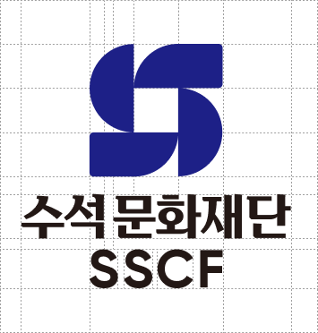
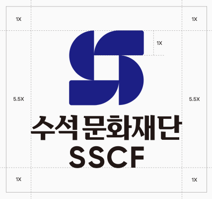
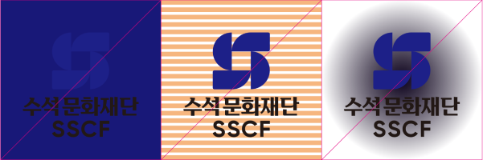

건강한 사회발전을 위해 보호와 책임을 다하는
수석문화재단의 정신을 시각화합니다
수석문화재단의 정신을 시각화합니다
문화의 다양성, 평등과 인권의 존중을 위한 수석재단의 사회적 모범과 책임의 가치를 담은 수석문화재단의
새로운 CI를 소개합니다.
CI DESIGN MOTIF
CI 디자인 모티브
수석재단의 기반이 되는 장학 · 학술 · 문화 · 출판 네 개의 기둥을
S 형태로 가드를 표현한 심볼입니다
S 형태로 가드를 표현한 심볼입니다
CI GUIDELINES
CI 가이드라인
GRID SYSTEM
그리드시스템

브랜드 마크의 재생은 메뉴얼 데이터의 해당 Document를 사용하는 것을 원칙으로 하나 이 방법이 불가능할 경우 본 항에서 예시한 그리드 시스템을 이용하여 정확하게 제작 사용한다.
CLEAR SPACE
공간규정

명확한 로고의 전달과 시각적 효과를 위해 빈 공간을 주어 로고를 문자 또는 이미지와 같은 다른 요소로부터 분리합니다.
LOGO USAGE
로고 사용규정
BI VERSIONS
국문, 영문 사용 시 해당 언어에 맞는 BI 사용을 준수해야 합니다.
-
BASIC TYPE
-
VER. KOR
-
VER. ENG
ELEMENTS IDENTIFIER
BI 적용 상황 중 다음 사이즈 규정을 준수해야 합니다.
INCORRECT USAGE
수석문화재단의 일관된 이미지를 위해 임의로 색상, 형태 등 아래에 제시된 항목 외에 수석문화재단의 아이덴티티를 훼손하는 어떠한 경우도 허용될 수 없습니다.
Shape
임의로 평을 준 경우
임의로 장을 준 경우
임의로 자간을 준 경우
테두리를 적용한 경우
임의로 두껍게 적용한 경우
임의로 로고타입을 바꾼 경우
Color

명도차가 적은 배경색을 사용한 경우
복잡한 배경위에 사용한 경우
그라데이션 위에 사용한 경우
로고타입에 그라데이션을 적용한 경우
로고타입의 색을 바꾼 경우
로고타입에 테두리를 준 경우
COLOR USAGE
칼라 규정
SSCF BLUE
- C 100
- M 100
- Y 0
- K 0
- R 24
- G 32
- B 136
- #182088
SSCF GOLD
- C 25
- M 40
- Y 65
- K 0
- R 201
- G 160
- B 99
- #C9A063
SSCF WHITE
- C 0
- M 0
- Y 65
- K 0
- R 255
- G 255
- B 255
- #FFFFFF
TYPEFACE
수석문화재단의 일관된 스타일을 표현하기 위해 모든 매체에 동일하게 적용하여야 하며 매체환경에 따라 적합한 굵기의 서체를 사용해야 합니다.
KOREAN
Main font
Sub font
ENGLISH
Main font